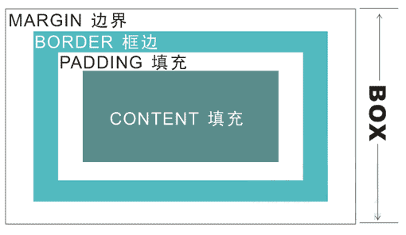
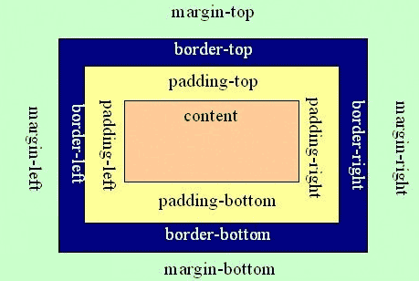
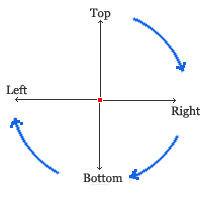
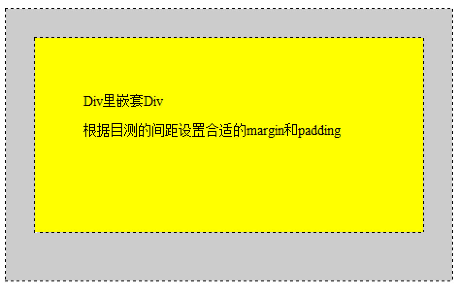

页面主体布局分析
耶鲁大学新闻首页主体部分
布局分析
|
|
页面属性设置
页面属性设置：字体、字体尺寸、行间距、默认链接

盒型模型与边距
div盒子模型
插入-（布局）插入div标签
- 通常div盒子会单独地占据一行
- div盒子与table可以混合布局
- 通过margin与padding可对div盒子设置外边距与内边距
margin与padding
|  |  |
margin：控制元素与外边另一个元素间的距离。
|
padding：控制元素与其中填充内容的距离。  |
说明：除了div外，很多网页元素可设边距，如body、表格、各种标题、列表等。
练习：这是一个Div里嵌套另一个Div，根据目测的间距设置合适的margin和padding。


新闻热点部分制作
布局分析
热点新闻 |
News1 | News2 | ||
| News3 | News3 | |||
可采用表格进行如此布局。
布局实现
- 插入2X3的表格（可设宽度为1000px)，合并相关单元格，设置第一列列宽为50%，后两列分别是25%
- 在每个td单元格中插下一个外间距为10px、内容置顶端的div盒子
- 在div盒子中插入图片
- 在div盒子中插入带链接的文字（可设为标题3）
- 对div盒子画边框线
css样式代码：
border:1px solid #dddddd; - 对h3进行内边距设置
- 根据不同的情况对盒内链接进行设置（a和a:hover）
练习：制作新闻热点部分的页面区域。

“The Yale Farm”部分制作
布局分析
| 标题、线条、链接文字 | 图 |
布局实现
- 插入1 X 2的表格（因是对表格边框画线，为对齐起见，得减去两边的间距共20px，所以表格可设宽度为980px)，设置第二列列宽为260px
- 在每个td单元格中插下一个带外间距的div盒子
- 左边部分，在div盒子中插入标题、线条、带链接的文字
参考html代码（需要设计css样式 .yalefarm、.yalefarm p、.yalefarm a、.yalefarm a:hover）
<div class="yalefarm">
<p>The Yale Farm</p>
<div style="width:50px; height:30px; border-top:1px #888 solid" ></div>
<a href="#">The Yale Farm</a> produces dozens of varieties of vegetables, fruits, herbs, and flowers, and is home to free-range laying hens and honeybees.
</div>
- 右边部分，在div盒子中插入图片
参考html代码（需要设计css样式 .farm）
<div class="farm">
<img src="images/box-yale-farm.jpg" width="200" height="135" />
</div>

灰条部分制作
布局分析
| 标题一 | 标题二 | |
| 小标题和链接文字 | Date | Content |
| Date | Content | |
| Date | Content | |
布局实现
- 用满屏宽、灰色背景、内容居中、带上下内边距的div中套放一个表格
参考Html代码
<div class="greybar">
<table width="980" border="0" cellspacing="0" cellpadding="0">
......
</table>
</div>
- 表格中的两列各占50%宽
- 对标题行可设置css样式（字体、尺寸、颜色、行间距等）
参考Html代码
<tr class="title">
<td style="width:50%">In the Media</td>
<td colspan="2">Featured Events</td>
</tr>
- 左边小标题得设css样式（上边距、字体颜色 、字母间距、自动转大写等）
参考Html代码
<div class="greybar_t">impact on record</div>
- 日期单元格可设固定像素宽度，月和日分别放在一个div盒子中
参考Html代码（月份和日期分别设置css样式）
<td style="width:50px">
<div class="month">mar</div>
<div class="date">31</div>
</td>
规范格式与点缀线条
规范格式
- 页面有效部分宽度可设为1000px（包括间距），两旁留白；
- 文字内容的字体颜色color为: #222222；
- 图片新闻下链接字体颜色color为: #222222，鼠标经过时的颜色为：#286dc0；
- 第三部分灰色背景色是#f9f9f9；
- 灰条上标题的颜色是#00356b；
- 灰条上标题的字体是Georgia, "Times New Roman", Times, serif;
- 灰条上日期的字体是Georgia, "Times New Roman", Times, serif;
- 概览页面应同被仿制网页在布局、内容、细节上大致相同。
用border样式绘制线条
border样式设置
<div style="border-bottom:1px #F00 solid;">.....</div>
- border-top：顶边边框样式
- border-left：左边边框样式
- border-right：右边边框样式
- border-bottom：底边边框样式
| Last | Home | Next |
©2012-2018 Yang Peili. All rights reserved. contact me